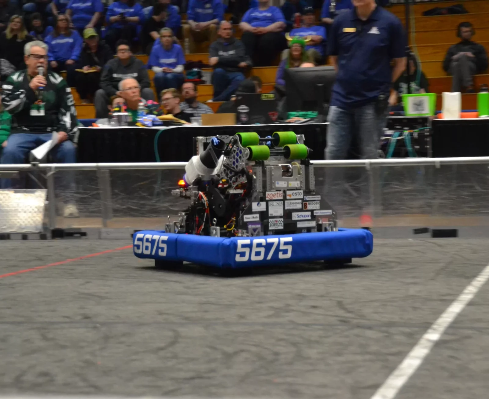

Note Worthy · 2024 team robot ↗After odometry · Autonomous planningMake your first PathPlanner path
Turn a pose and a destination into a route you can inspect and explain.
All lessons · Which robot code are we reading?
Today’s small goal
Create and preview a one-meter path, then put it in an auto. Before starting: pose, swerve and odometry. Make a backup or Git checkpoint before changing your files. Allow 45–60 minutes. This home activity previews a plan in the PathPlanner editor; running robot code is a later acceptance step.
1. Three words to keep separate
- Pose: the robot’s X position, Y position and facing direction at one moment.
- Path: the route between positions, with speed/acceleration limits and rotation targets.
- Auto: a sequence of actions, such as follow a path, wait, then print a marker.
2. Open the disposable editor project
This lab uses the stable GUI and does not install any PathPlannerLib vendordep. You can learn paths now; the mentor handles matching the robot library to the released robot toolchain later.
- Use the official PathPlanner GUI 2026.1.2 release for this lab. The GUI version and the robot’s PathPlannerLib vendordep are different things; do not update the robot libraries to match the GUI number.
- Extract the download. It contains
starterandanswers. In PathPlanner choose Open Robot Project, then selectstarter, the folder containingdeploy. - This is a standalone GUI folder with
deploy/pathplanner/settings.json,pathsandautos. A WPILib robot project usessrc/main/deploy/pathplannerinstead. The starter is not deployable robot code. - Leave Hot Reload off. The supplied settings describe an illustrative swerve robot for the preview. Do not copy those dimensions, gearing or gains onto hardware. Use the settings guide to identify units.
3. Make the path your own
- Open
FirstLine. It begins at X = 1.0 m, Y = 1.0 m and ends at X = 1.5 m, Y = 1.0 m. - Change the end anchor to (2.0, 1.0). Keep the start’s next control point at (1.33, 1.0), and set the end’s previous control point to (1.67, 1.0). These handles control the curve’s tangent; equal Y values make a straight line.
- Keep maximum speed at 0.5 m/s, acceleration 0.5 m/s², starting speed 0 and ending speed 0. Keep Unlimited off. These are preview constraints, not proof a physical robot is safe at that speed.
- Preview the path. It should travel one meter along +X and stop. Predict what reducing maximum speed does to the duration, then try it and restore 0.5.
- Set both starting and ending robot rotation to 90°. Preview again. The robot faces +Y while traveling +X. A swerve robot’s facing direction is separate from the tangent of its route.
- Inspect the saved
FirstLine.pathin VS Code. Findanchor,globalConstraints,idealStartingStateandgoalEndState. Compare with the separate answers folder after trying.
My preview is curved or the robot spins
Check both control-point Y coordinates and both anchors. Then check starting and ending rotation, not just waypoint heading. A route can be straight while its facing direction changes.
Keep the two practice projects distinct: this editor download uses FirstLine and FirstAuto. The later simulation starter uses TrainingLine. Learn the editor here, then open sim-starter separately for Lab 4; do not replace its reference path with FirstLine and expect the reference checks to match.
4. Build the auto sequence
- Open
FirstAuto, which already follows FirstLine. Add a Wait of 1.0 second after the path. - Keep Reset Odometry enabled. Explain: at auto start this tells the estimator “the robot is at the planned start.” It does not move the physical robot there; placement must be checked separately.
- Save and inspect
FirstAuto.auto. It should name FirstLine, then a wait. Compare the saved files with your backup. If you are working in a training Git repository, review the diff before committing. UseAdd one-meter path and explain its start poseas an example message.
5. In the real robot
The reviewed AutoRoutines first registers named commands and then builds its chooser. A short exact example is:
NamedCommands.registerCommand(
"LogMarker",
Commands.defer(() -> Commands.print("[Auto] LogMarker reached"), Set.of()));LogMarker is the name an auto must use exactly. Commands.defer asks for a fresh inner command when scheduled. The empty Set.of() is appropriate here because printing uses no subsystem. A mechanism command must declare its actual requirements.
The robot’s DriveOffLine.auto follows its path and then runs LogMarker. In that reviewed path, X decreases from 3.55 to 2.25 while facing 0°. Predict why moving in −X does not require facing −X. Your new home path is illustrative; it is not a replacement for DriveOffLine.
6. What a mentor must verify before robot execution
The editor preview is a planned trajectory. Closed-loop simulation adds robot code and an estimated actual pose; hardware adds wheels, sensors, calibration and a real floor. For the practice bot, the mentor must supply its pinned project and verify the existing simulation startup issue first.
In that verified copy, configure AutoBuilder once with the current pose, a coordinated reset, robot-relative velocity and drive output; register names before loading autos; select the auto; check the start pose; then compare planned and observed motion on both alliances. Alliance handling stays in the existing utilities and blue-field frame. Do not add a red-alliance heading flip. A hardware-dependent command needs a timeout.
Show your one-meter path and wait in the saved files. Explain pose versus path versus auto, facing versus travel, and why Reset Odometry cannot correct physical placement.